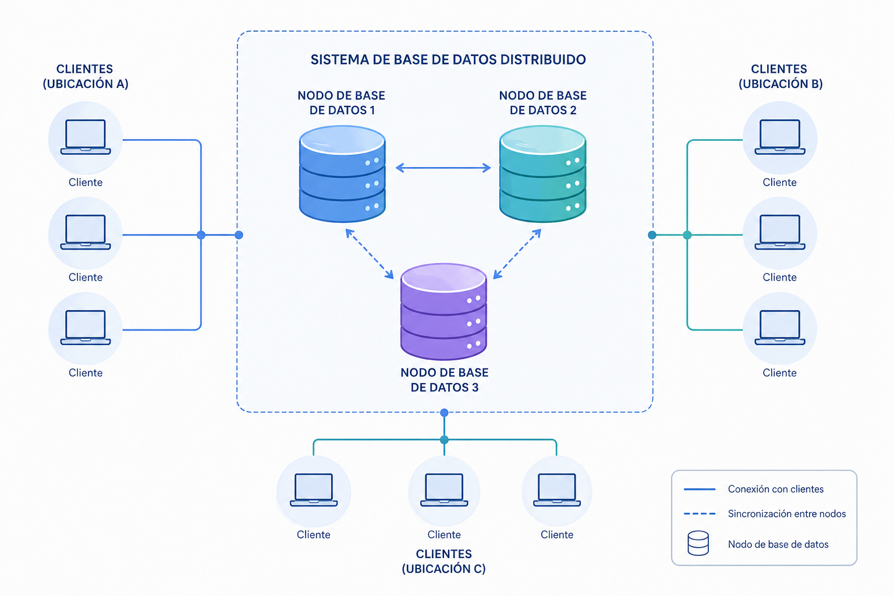
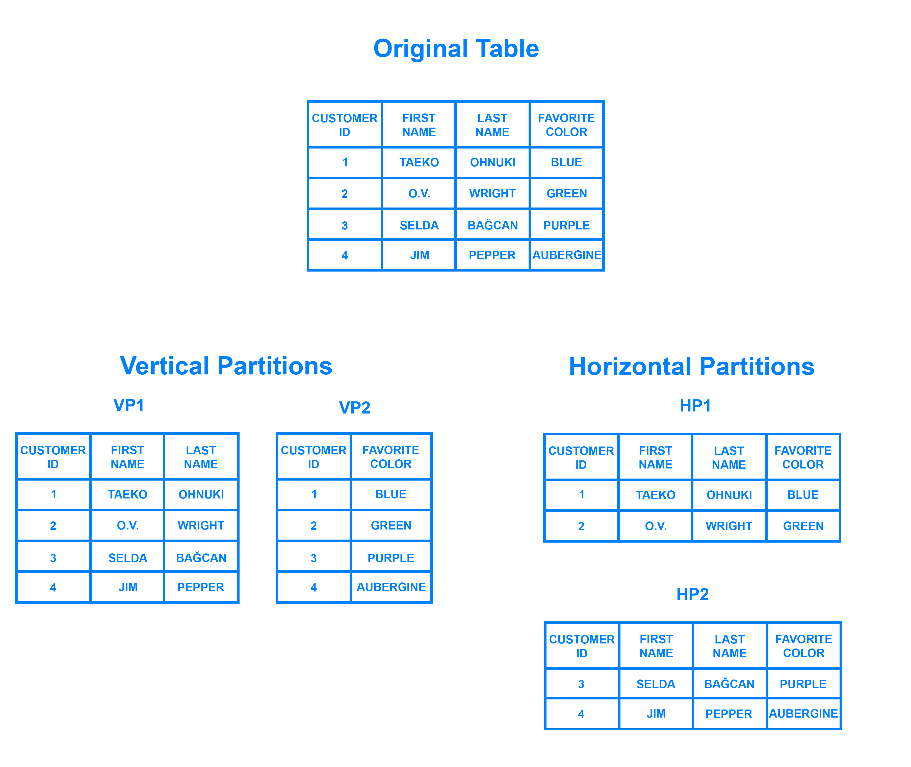
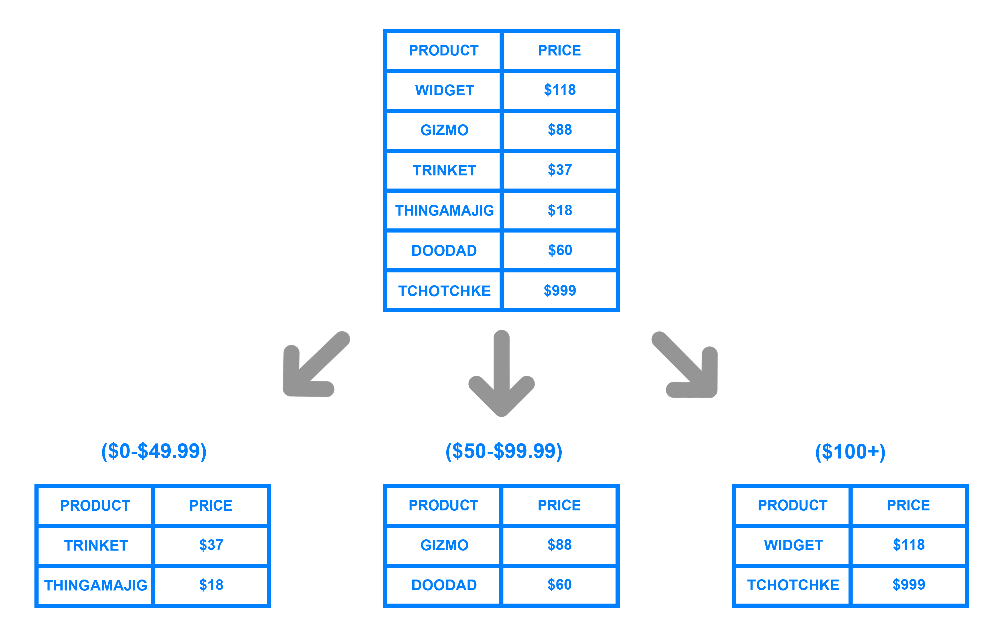
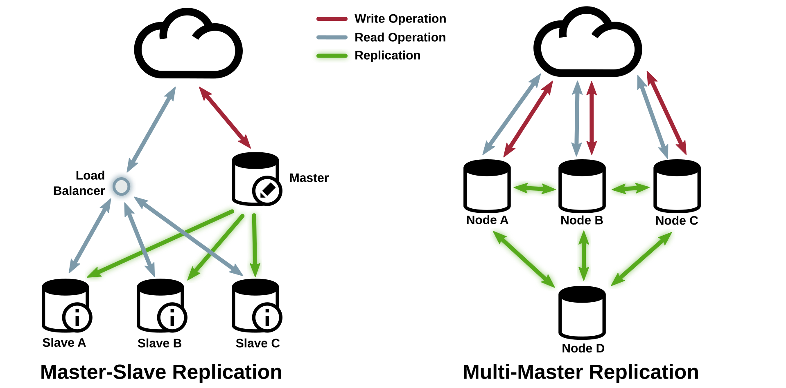
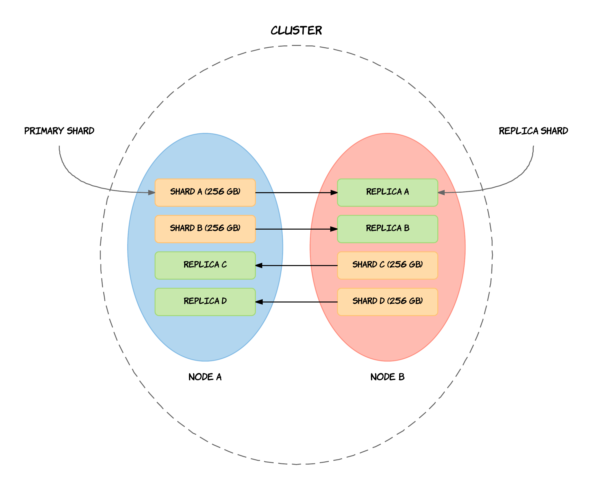
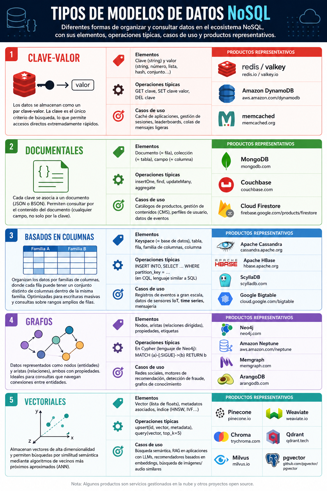

Bases de datos NoSQL
Propuesta didáctica
Una vez conocemos cómo funciona un SGBD relacional y cómo podemos explotarlo para extraer datos y manipularlos, en este último bloque nos centramos en soluciones no relacionales, y por lo tanto, finalizaremos el RA1 "Reconoce los elementos de las bases de datos analizando sus funciones y valorando la utilidad de los sistemas gestores", además de comenzar a trabajar el RA7: "Gestiona la información almacenada en bases de datos no relacionales, evaluando y utilizando las posibilidades que proporciona el sistema gestor".
Criterios de evaluación
Respecto al RABD.1:
- CE1g: Se ha reconocido la utilidad de las bases de datos distribuidas.
- CE1h: Se han analizado las políticas de fragmentación de la información.
- CE1j: Se han reconocido los conceptos de Big Data y de la inteligencia de negocios.
Respecto al RABD.7:
- CE7a: Se han caracterizado las bases de datos no relacionales.
- CE7b: Se han evaluado los principales tipos de bases de datos no relacionales.
- CE7c: Se han identificado los elementos utilizados en estas bases de datos.
- CE7d: Se han identificado distintas formas de gestión de la información según el tipo de base de datos no relacionales.
Contenidos
Almacenamiento de la información:
- Bases de datos centralizadas y bases de datos distribuidas. Técnicas de fragmentación.
- Big Data: introducción, análisis de datos, inteligencia de negocios.
Bases de datos no relacionales:
- Uso de bases de datos no relacionales:
- Características de las bases de datos no relacionales.
- Tipos de bases de datos no relacionales.
- Elementos de las bases de datos no relacionales.
- Sistemas gestores de bases de datos no relacionales.
- Herramientas de los sistemas gestores de bases de datos no relacionales para la gestión de la información almacenada.
Cuestionario inicial
- ¿Qué es una base de datos distribuida?
- ¿En qué consiste el escalado vertical? ¿Y el horizontal?
- Una base de datos distribuida, ¿qué escalado utiliza?
- ¿Qué relación existe entre el cloud y las bases de datos distribuidas?
- ¿En qué consiste el particionado de los datos?
- ¿Para qué sirve la clave de particionado?
- ¿En qué consiste la replicación?
- ¿Una base de datos puede estar particionada y replicada a la vez?
- ¿En qué consiste el Teorema de CAP?
- ¿Qué significa el acrónimo BASE? ¿En qué ámbito se emplea?
- ¿Qué es Big Data? ¿Y Small Data?
- ¿Conoces las 3V del Big Data? ¿Hay más?
- ¿Qué tipos de analítica de datos existen? ¿En qué consisten?
- ¿Qué es un dashboard y para qué se utiliza?
- ¿En qué consiste la ciencia de datos?
- ¿Qué significa el acrónimo NoSQL?
- ¿Por qué aparecieron las soluciones NoSQL?
- ¿Qué tipos de modelos NoSQL existen? ¿Puedes nombrar una solución software para cada uno de ellos?
- ¿Qué son las bases de datos vectoriales y por qué han ganado relevancia recientemente?
- ¿Qué diferencia hay entre NoSQL y NewSQL?
Programación de Aula (4h)
Esta unidad es la primera del bloque de soluciones NoSQL, la cual se imparte a final de curso, con una duración estimada de 9 horas, repartidas en 4 horas para el bloque introductorio a NoSQL y 5 horas más para trabajar con Redis:
| Sesión | Contenidos | Actividades | Criterios trabajados |
|---|---|---|---|
| 1 | Bases de datos distribuidas | AC1201 | CE1g, CE1h |
| 2 | Big Data y Business Intelligence | AC1202 | CE1j |
| 3 | NoSQL | ||
| 4 | Investigación NoSQL | AC1205 | CE7a, CE7b, CE7c, CE7d |
Almacenamiento de datos
Se puede decir que estamos en la tercera plataforma del almacenamiento de datos. La primera llegó con los primeros computadores y se materializó en las bases de datos jerárquicas y en red, así como en el almacenamiento ISAM. La segunda vino de la mano de Internet y las arquitecturas cliente-servidor, lo que dio lugar a las bases de datos relacionales.
La tercera se ve motivada por el Big Data, los dispositivos móviles, las arquitecturas cloud, las redes de IoT y las tecnologías/redes sociales. Es tal el volumen de datos que se genera que aparecen nuevos paradigmas como NoSQL, NewSQL y las plataformas de Big Data.
NoSQL aparece como una necesidad debida al creciente volumen de datos sobre usuarios, objetos y productos que las empresas tienen que almacenar, así como la frecuencia con la que se accede a los datos. Los SGDB relacionales existentes no fueron diseñados teniendo en cuenta la escalabilidad ni la flexibilidad necesaria por las frecuentes modificaciones que necesitan las aplicaciones modernas; tampoco aprovechan que el almacenamiento a día de hoy es muy barato, ni el nivel de procesamiento que alcanzan las máquinas actuales.

Evolución de los sistemas de almacenamiento
La solución es el despliegue de las aplicaciones y sus datos en clústeres de servidores, distribuyendo el procesamiento en múltiples máquinas.
Bases de Datos Distribuidas
En la primera unidad aprendimos cómo se almacena la información en sistemas gestores de datos, normalmente centralizados. Esto es, todos los datos residen en un servidor o nodo central que sigue un modelo cliente-servidor, siendo los clientes las diferentes aplicaciones y servicios que consumen los datos mediante conexiones remotas gracias a Internet.
Por un lado, las bases de datos centralizadas son sencillas de gestionar y mantener, y ofrecen una alta consistencia en los datos. Por contra, al centrar todos los datos en un único nodo, este se convierte en un SPOF (Single Point of Failure). Además, tienen una escalabilidad y rendimiento limitados a las características hardware de las máquinas donde corren.
Si el sistema crece y la carga de usuario supera la capacidad del servidor, es necesario migrar a un modelo más potente (y normalmente más caro) como son las bases de datos distribuidas, donde los datos se reparten entre varias máquinas, particionando los datos o fragmentándolos, dependiendo de las necesidades de las aplicaciones, incrementando la complejidad del sistema para dar soporte a la sincronización de los datos y la tolerancia a fallos.
Así pues, una base de datos distribuida es aquella en la cual existen diversos servidores gestores de bases de datos conectados entre sí formando una única base de datos con un solo esquema lógico.
Un sistema gestor de bases de datos distribuidas (SGBDD) se define como el sistema software que permite la gestión de bases de datos distribuidas y hace la distribución de datos transparente para los usuarios.

Bases de Datos Distribuidas
Los servidores de una base de datos distribuida suelen denominarse nodos y pueden estar físicamente cercanos (mismo edificio o grupo de edificios) y conectados a través de una red de área local, o pueden estar distribuidos geográficamente a grandes distancias y conectados a través de una red de larga distancia (WAN).
En comparación con los sistemas centralizados, son más complejos en cuanto a su gestión, y la sincronización y consistencia de los datos es más difícil de garantizar.
Cloud
Las soluciones en la nube como AWS o Azure han propiciado la proliferación de soluciones distribuidas, al facilitar el despliegue automático de este tipo de soluciones, permitiendo una configuración elástica de la arquitectura.
Fragmentación
Dado el modo en el que se estructuran las bases de datos relacionales, normalmente escalan verticalmente, esto es, un único servidor cada vez más potente (más RAM, mejor CPU y almacenamiento) que almacena toda la base de datos para asegurar la disponibilidad continua de los datos. Esto se traduce en costes que se incrementan rápidamente, con un límites definidos por el propio hardware, y en un pequeño número de puntos críticos de fallo dentro de la infraestructura de datos.
La solución es escalar horizontalmente, añadiendo nuevos servidores en vez de concentrarse en incrementar la capacidad de un único servidor, lo que permite tratar con conjuntos de datos más grandes de lo que sería capaz cualquier máquina por sí sola. Este escalado horizontal se conoce como Sharding, fragmentación o particionado de los datos.
Si en un sistema relacional queremos particionar los datos, podemos distinguir entre:
- Fragmentación horizontal: diferentes filas en diferentes particiones, por ejemplo, dividir a los clientes por región geográfica.
- Fragmentación vertical: diferentes columnas en particiones distintas, por ejemplo, separar los datos de contacto y financieros. Normalmente, la clave primaria se mantiene en ambas particiones para poder realizar joins entre ellas.

Particionado de los datos - digitalocean.com
Escalar horizontalmente una base de datos relacional entre muchas instancias de servidores se puede conseguir, pero normalmente conlleva el uso de SANs (Storage Area Networks) y otras triquiñuelas para hacer que el hardware actúe como un único servidor.
Como los sistemas SQL no ofrecen esta prestación de forma nativa, bien los productos ofrecen complementos para permitirla, como MySQL NDB Cluster o PostgreSQL con Citus, o bien los equipos de desarrollo se las tienen que ingeniar para conseguir desplegar múltiples bases de datos relacionales en varias máquinas, pudiendo utilizar una solución que actúe como intermediario (como ProxySQL), o bien, desarrollando una solución propia, como puede ser:
- Los datos se almacenan en cada instancia de base de datos de manera autónoma
- El código de aplicación se desarrolla para distribuir los datos y las consultas y agregar los resultados de los datos a través de todas las instancias de bases de datos
- Se debe desarrollar código adicional para gestionar los fallos sobre los recursos, para realizar joins entre diferentes bases de datos, balancear los datos y/o replicarlos, etc…
Si no queremos complicarnos la vida administrando los sistemas y configurando todas las herramientas, siempre podemos optar por una solución cloud como AWS RDS o Azure SQL DB, donde el tamaño de las instancias se puede modificar, así como configurar diferentes tipos de réplicas para mejorar la tolerancia a fallos.
Dicho esto, con un planteamiento de una base de datos distribuida, muchos beneficios de las bases de datos como la integridad transaccional se ven comprometidos o incluso eliminados al emplear un escalado horizontal.
Auto-sharding
Aunque las estudiaremos más adelante, conviene comentar que las bases de datos NoSQL normalmente soportan auto-sharding, lo que implica que de manera nativa y automáticamente se dividen los datos entre un número arbitrario de servidores, sin que la aplicación sea consciente de la composición del clúster de servidores. Los datos y las consultas se balancean entre los servidores.
El particionado se realiza mediante un método consistente, como puede ser:
- Por rangos de su id: por ejemplo "los usuarios del 1 al millón están en la partición 1" o "los usuarios cuyo nombre va de la A a la L" en una partición, en otra de la M a la Q, y de la R a la Z en la tercera.

Particionado por rango - digitalocean.com - Por listas: dividiendo los datos por la categoría del dato, es decir, en el caso de datos sobre libros, las novelas en una partición, las recetas de cocina en otra, etc.. - Mediante un función hash, la cual devuelve un valor para un elemento que determine a qué partición pertenece.

Particionado por hash - digitalocean.com
Independientemente del método, el atributo o clave que se elige para decidir a qué partición va cada dato se conoce como Shard key, o clave de particionado.
Cuando particionar
El motivo para particionar los datos se debe a:
- limitaciones de almacenamiento: los datos no caben en un único servidor, tanto a nivel de disco como de memoria RAM.
- rendimiento: al balancear la carga entre particiones las escrituras serán más rápidas que al centrarlas en un único servidor.
- disponibilidad: si un servidor está ocupado, otro servidor puede devolver los datos. La carga de los servidores se reduce.
No particionaremos los datos cuando la cantidad sea pequeña, ya que el hecho de distribuir los datos conlleva unos costes que pueden no compensar con un volumen de datos insuficiente. Tampoco esperaremos a particionar cuando tengamos muchísimos datos, ya que el proceso de particionado puede provocar sobrecarga del sistema.
La nube facilita de manera considerable este escalado, mediante proveedores como AWS o Azure los cuales ofrecen virtualmente una capacidad ilimitada bajo demanda, y despreocupándose de todas las tareas necesarias para la administración de la base de datos.
Los desarrolladores ya no necesitamos construir plataformas complejas para nuestras aplicaciones, de modo que nos podemos centrar en escribir código de aplicación. Una granja de servidores con commodity hardware puede ofrecer el mismo procesamiento y capacidad de almacenamiento que un único servidor de alto rendimiento por mucho menos coste.
Replicación
La replicación mantiene copias idénticas de los datos en múltiples servidores, lo que facilita que las aplicaciones siempre funcionen y los datos se mantengan seguros, incluso si alguno de los servidores sufre algún problema.
La mayoría de las bases de datos actuales también soportan la replicación automática, lo que implica una alta disponibilidad y recuperación frente a desastres sin la necesidad de aplicaciones de terceros encargadas de ello. Desde el punto de vista del desarrollador, el entorno de almacenamiento es virtual y ajeno al código de aplicación.
Antes de ver los tipos, hemos de ser conscientes de cuál va a ser la función de la máquina replicada. Si queremos tener una copia de los datos, la cual sólo vamos a utilizar para realizar operaciones de consulta (réplica de lectura) va a implicar una configuración diferente de si lo que queremos es replicar nodos donde queremos que se pueda escribir también (réplica de escritura).
Dicho esto, las principales arquitecturas de replicación son:
- Maestro-esclavo / Primario-secundario (leader-follower)
Todas las escrituras se realizan en el nodo principal y después se replican a los nodos secundarios. El nodo primario es un SPOF (single point of failure). - Multi-maestro / Entre pares (peer-to-peer)
Todos los nodos tienen el mismo nivel jerárquico, de manera que todos (o casi todo) admiten escrituras. Al poder haber escrituras simultáneas sobre el mismo datos en diferentes nodos, pueden darse inconsistencia en los datos.

Tipos de replicación - https://berb.github.io/diploma-thesis
Modos de operación
Más allá de la arquitectura (quién puede escribir y quién no), existe una segunda decisión clave: cuándo se considera completada una escritura. Aquí distinguimos dos modos de operación:
- Replicación síncrona: el nodo principal no confirma la escritura al cliente hasta que uno o varios nodos secundarios han recibido y aplicado el cambio. Garantiza que, si el primario cae justo después de confirmar, ningún dato se pierde, pero incrementa la latencia de cada operación, ya que se debe esperar a la red y al disco de los secundarios. Es el modo habitual en sistemas que priorizan la consistencia, como las réplicas locales de PostgreSQL o las configuraciones de MongoDB con
writeConcern: "majority". - Replicación asíncrona: el nodo principal confirma la escritura al cliente en cuanto la persiste localmente, y propaga el cambio a los secundarios "en segundo plano". Ofrece menor latencia y mayor rendimiento de escritura, pero introduce una ventana de tiempo en la que los secundarios están desactualizados respecto al primario. Si el primario cae durante esa ventana, los datos no replicados se pierden. Es el modo habitual en réplicas geográficamente distantes (por ejemplo, copias entre continentes en AWS) y en sistemas que priorizan la disponibilidad, como Cassandra o DynamoDB con sus configuraciones por defecto.
Tipos de consistencia
Además, conviene aclarar que cada modelo conlleva que los datos tengan diferente tipo de consistencia:
- Consistencia fuerte: Garantiza que todas las réplicas tienen los mismos datos antes de confirmar cualquier operación, esto es, que después de que una escritura se complete, todas las lecturas reflejan inmediatamente el valor actualizado. Por ejemplo, los sistemas bancarios y las bases de datos que soportan ACID.
- Consistencia eventual: Permite cierto desfase temporal entre réplicas, aceptando que los datos se sincronizarán en algún momento, a costa de poder llegar a leer datos desactualizados. Usos típicos serían los likes o comentarios en redes sociales.
En la práctica, muchos sistemas permiten configurar el modo por operación y el nivel de consistencia, eligiendo el compromiso adecuado entre durabilidad y latencia. Por ejemplo, una aplicación bancaria puede exigir replicación síncrona a la mayoría de nodos para una transferencia (preferimos latencia a perder datos), lo que implica una consistencia fuerte, mientras que el contador de visitas de la misma aplicación se replica de forma asíncrona (preferimos rendimiento a precisión inmediata) consiguiendo consistencia eventual. Esta decisión está íntimamente ligada al Teorema CAP que veremos más adelante: la replicación síncrona se asocia a sistemas más consistentes (CP), mientras que la asíncrona se asocia a sistemas más disponibles (AP).
Cuando replicar
La replicación de los datos se utiliza para alcanzar:
- escalabilidad, incrementando el rendimiento al poder distribuir las consultas en diferentes nodos, y mejorar la redundancia al permitir que cada nodo tenga una copia de los datos.
- disponibilidad, ofreciendo tolerancia a fallos de hardware o corrupción de la base de datos. Al replicar los datos vamos a poder tener una copia de la base de datos, dar soporte a un servidor de datos agregados, o tener nodos a modo de copias de seguridad que pueden tomar el control en caso de fallo.
- aislamiento (la i en ACID - isolation), entendido como la propiedad que define cuándo y cómo al realizar cambios en un nodo se propagan al resto de nodos. Si replicamos los datos podemos crear copias sincronizadas para separar procesos de la base de datos de producción, pudiendo ejecutar informes, analítica de datos o copias de seguridad en nodos secundarios de modo que no tenga un impacto negativo en el nodo principal, así como ofrecer un sistema sencillo para separar el entorno de producción del de preproducción.
Replicación vs particionado
No hay que confundir la replicación (copia de los datos en varias máquinas) con el particionado (cada máquina tiene un subconjunto de los datos). El entorno más seguro y con mejor rendimiento es aquel que tiene los datos particionados y replicados (cada máquina que tiene un subconjunto de los datos está replicada en 2 o más).

Replicación y particionado - codingexplained.com
Teorema CAP
Propuesto por Eric Brewer en el año 2000, plantea que podemos crear una base de datos distribuida que elija dos de las siguientes tres características:
- Consistencia: las escrituras son atómicas y todas las peticiones posteriores obtienen el nuevo valor, independientemente del lugar de la petición.
- Disponibilidad (Available): la base de datos devolverá siempre un valor. En la práctica significa que no hay downtime.
- Tolerancia a Particiones: el sistema funcionará incluso si la comunicación con un servidor se interrumpe de manera temporal (para ello, ha de dividir los datos entre diferentes nodos). Es decir, implica que se pueden recibir lecturas desde unos nodos que no contienen información escrita en otros.
En otras palabras, podemos crear un sistema de base de datos que sea consistente y tolerante a particiones (CP), un sistema que sea disponible y tolerante a particiones (AP), o un sistema que sea consistente y disponible (CA). Pero no es posible crear una base de datos distribuida que sea consistente, disponible y tolerante a particiones al mismo tiempo.

Teorema de CAP
El teorema CAP es útil cuando consideramos el sistema de base de datos que necesitamos, ya que nos permite decidir cuál de las tres características vamos a descartar. La elección realmente se centra entre la disponibilidad y la consistencia, ya que la tolerancia a particiones es una decisión de arquitectura (sea o no distribuida).
Aunque el teorema dicte que si en un sistema distribuido elegimos disponibilidad no podemos tener consistencia, todavía podemos obtener consistencia eventual. Es decir, cada nodo siempre estará disponible para servir peticiones, aunque estos nodos no puedan asegurar que la información que contienen sea consistente (pero si bastante precisa), en algún momento lo será.
Algunas bases de datos tolerantes a particiones se pueden ajustar para ser más o menos consistentes o disponibles a nivel de petición (tunable consistency). Por ejemplo, Cassandra permite especificar el nivel de consistencia de cada operación (ONE, QUORUM, ALL), de manera que el cliente decide en tiempo de petición qué compromiso desea entre consistencia y latencia.
Clasificación según CAP
El siguiente gráfico muestra cómo dependiendo de estos atributos podemos clasificar los sistemas NoSQL:

Clasificación según CAP
Así pues, las bases de datos NoSQL se clasifican en:
- CP: Consistente y tolerante a particiones. Tanto MongoDB como HBase se han considerado tradicionalmente CP, ya que dentro de una partición pueden no estar disponibles para responder una determinada consulta (por ejemplo, evitando lecturas en los nodos secundarios), aunque son tolerantes a fallos porque cualquier nodo secundario se puede convertir en principal y asumir el rol del nodo caído.
MongoDB y ACID
Desde la versión 4.0 (2018), MongoDB soporta transacciones ACID multi-documento, y desde la 4.2 también en clusters particionados. Esto difumina la clasificación CAP clásica: hoy MongoDB puede comportarse como un sistema fuertemente consistente o ajustarse para priorizar disponibilidad mediante el readPreference y el writeConcern.
- AP: Disponible y tolerante a particiones. DynamoDB y Cassandra permiten replicar los datos entre sus nodos, aunque no garantizan la consistencia inmediata en todos los servidores (consistencia eventual).
- CA: Consistente y disponible. Aquí es donde situaríamos a los SGDB relacionales tradicionales. Por ejemplo, PostgreSQL es CA, ya que no distribuye los datos de manera nativa y por tanto la partición no es una restricción (aunque ofrece extensiones como Citus para dar soporte al particionado).
Lo bueno es que la gran mayoría de sistemas permiten configurarse para cambiar su tipo CAP, lo que permite que MongoDB pase de CP a AP, o CouchDB de AP a CP.
El Teorema CAP en perspectiva
El Teorema CAP es un marco conceptual útil, pero conviene matizarlo:
- Se trata de una simplificación. El propio Brewer publicó en 2012 el artículo CAP twelve years later: How the rules have changed aclarando que la elección no es "2 de 3" de manera estricta, sino que en presencia de particiones se debe elegir entre consistencia y disponibilidad, mientras que sin particiones se pueden tener ambas.
- Muchos sistemas son configurables, ya que la mayoría de las bases de datos NoSQL modernas ofrecen tunable consistency (consistencia ajustable) por operación. Por ejemplo, en Cassandra puedes configurar el nivel
ONE,QUORUMoALLen cada lectura/escritura. - CAP no contempla la latencia. En cambio, el modelo PACELC extiende CAP introduciendo que, aunque no haya particiones (E, Else), hay que elegir entre Latencia y Consistencia.

Diagrama de PACELC
BASE
De forma análoga al modelo transaccional ACID para las bases de datos relacionales que dan soporte a la transaccionalidad ofreciendo en todo momento un sistema consistente, las bases de datos distribuidas siguen el modelo transaccional BASE, el cual se centra en la alta disponibilidad y significa:
- Básicamente disponible (Basically Available): la base de datos siempre responde a las solicitudes recibidas, ya sea con una respuesta exitosa o con un error, aún en el caso de que el sistema soporte la tolerancia a particiones (de manera que caiga algún nodo o no esté accesible por problemas de la red). Esto puedo implicar lecturas desde nodos que no han recibido la última escritura, por lo que el resultado puede no ser consistente.
- Estado blando (Soft State): la base de datos puede encontrarse en un estado inconsistente cuando se produce una lectura, de modo que es posible realizar dos veces la misma lectura y obtener dos resultados distintos a pesar de que no haya habido ninguna escritura entre ambas operaciones, sino que la escritura se había realizado antes en el tiempo y no se había persistido hasta dicho momento.
- Consistencia eventual (Eventual consistency): tras cada escritura, la consistencia de la base de datos sólo se alcanza una vez el cambio ha sido propagado a todos los nodos. Durante el tiempo que tarda en producirse la consistencia, observamos un estado blando de la base de datos.
Una base de datos que sigue el modelo transaccional BASE prefiere la disponibilidad antes que la consistencia (es decir, desde el punto de vista del Teorema CAP es AP).
NewSQL
Mientras que las bases de datos NoSQL renunciaron a parte de las garantías ACID a cambio de escalabilidad, a partir de 2011 surge una tercera vía: las bases de datos NewSQL, que pretenden combinar la escalabilidad horizontal de los sistemas NoSQL con las garantías ACID y el lenguaje SQL de los sistemas relacionales tradicionales.
Las soluciones NewSQL más representativas son:
- Google Spanner: base de datos relacional distribuida globalmente con consistencia fuerte. Es uno de los pocos sistemas que se aproxima a CP+A gracias a su sincronización mediante relojes atómicos (TrueTime).
- CockroachDB: inspirada en Spanner, es open source y compatible con el dialecto de PostgreSQL.
- TiDB: compatible con el protocolo MySQL, separa el procesamiento de consultas del almacenamiento.
NewSQL es especialmente interesante en aplicaciones que necesitan consistencia fuerte sobre datos transaccionales (banca, comercio electrónico, sistemas de reservas) pero que han crecido más allá de la capacidad de un servidor único.
Big Data
Aunque parece que todo el mundo debe trabajar con cuantos más datos mejor, no todo es Big Data en el mundo tecnológico.

Datos y más datos
Está claro que los datos son el petróleo del siglo XX, tal como dijo Clive Humby en el 2006, y que se puede obtener mucho valor si almacenamos y sabemos extraer información precisa de "nuestros" datos. Sin embargo, ya en la década del 2020, los datos per se no son suficiente si no que debemos conocerlos y cuidarlos.
Pero el adjetivo Big implica cantidades ingentes, dicho de otro modo, cantidades de datos que una de nuestras máquinas no puede gestionar y necesita de la computación distribuida y plataformas como el cloud para su almacenamiento y gestión. Es probable que con soluciones de Small Data podamos cubrir gran parte de los problemas que requieren nuestra industria más cercana. Eso sí, muchas de las técnicas y destrezas asociadas a la ingeniería de datos no son únicas de grandes volúmenes de datos con arquitecturas distribuidas, sino que, podemos llevárnoslas a nuestros desarrollos a menor escala para automatizar y poner los datos por delante de nuestras empresas y aplicaciones.
Pero antes de entrar en harina, retrocedamos en el tiempo.
Hablemos de V
V fue un fenómeno en los 80 como serie de ciencia ficción, pero relacionado con el Big Data, dependiendo de la literatura, tenemos las 3V del Big Data, las 5V, las 7V...
En los inicios, para saber si hablábamos o no de Big Data, nos teníamos que preguntar si cumplían con las 3V:
- Variedad: en relación con las fuentes, formas y tipos. Por ejemplo, pueden ser: estructurados, como tablas de una base de datos relacional o ficheros de texto o semiestructurados como los documentos JSON. Incluso almacenar datos no estructurados como correos electrónicos, imágenes o audios.
- Volumen: Entendida como la cantidad de datos procesados y almacenados. A día de hoy probablemente superior al orden de TB de datos y que, para su procesamiento, superan la memoria RAM de nuestros sistemas.
- Velocidad: el tratamiento que realizamos sobre los datos, en ocasiones cercano al tiempo real o con unos tiempos de recolección, procesamiento y almacenamiento finitos y claramente definidos.
Luego se añadieron un par más, haciendo un total de 5V:
- Valor: "Lo que importa, son los datos importantes", los que aportan valor, transformando datos en información, y a su vez, en conocimiento que facilita la toma de decisiones.
- Veracidad: Debemos asegurar que los datos que tenemos son reales y no contienen datos erróneos, es decir, que son fiables. Se dedica un esfuerzo importante en explorar y validar los datos para que la analítica realizada sea veraz.
Y, por último, otras dos hasta llegar a las 7V:
- Viabilidad: Es necesario saber la capacidad que tiene una empresa para realizar un uso eficaz de los datos, cuestionarse qué y cuántos datos se necesitan para predecir los resultados más interesantes para la empresa.
- Visualización: Necesitamos poder representar los datos, ya sea de manera visual mediante gráficos o codificados en indicadores (KPI) para hacer que sean legibles y accesibles.

Las 7 V del Big Data
Claramente, para los departamentos de marketing, Big Data se escribe con V.
Inteligencia de negocio
Mientras que las aplicaciones Big Data recogen información desde múltiples fuentes de entrada, el concepto de inteligencia de negocio (business intelligence) se centra en el uso que hace la empresa de dichos datos, es decir, coge los datos y los transforma en conocimiento para la ayuda en la toma de decisiones en base a los datos analizados.
Hasta ahora, las preguntas a las que hemos dado respuesta son del tipo ¿Cuantas zapatillas hemos vendido en el último mes? Las empresas necesitas adoptar decisiones estratégicas para definir una estrategia que mejore su competitividad. Así pues, necesita respuestas a preguntas del tipo ¿Cuántos zapatillas blancas del 46 se vendieron el último mes en los centros comerciales más cercanos a la ciudad; comparados con las ventas del mismo mes el año pasado? o ¿Qué tipo de cliente me ha estado comprando una zapatilla premium en los últimos 5 años?
Para poder tener respuesta a estas preguntas, necesitamos realizar una analítica de datos, la cual implica procesar, limpiar, organizar y extraer información útil de grandes volúmenes de datos. Para ello, las herramientas de Business Intelligence (BI) son aplicaciones de soporte de decisiones que permiten en tiempo real, acceso interactivo, análisis y manipulación de información crítica y así ser capaces de generar conocimiento mediante el análisis de la información ya almacenada, es decir, realizando analítica descriptiva (¿Qué sucedió?) y diagnóstica (¿Por qué sucedió?).
Con la ayuda del Big Data y la IA, podemos afrontar analíticas más avanzadas, como son la analítica predictiva (¿Qué pasará en el futuro?) y prescriptiva (¿Cómo podemos prevenir? ¿Qué debería suceder?) para establecer tendencias, averiguar por qué suceden las cosas y hacer una estimación de cómo se desarrollarán las cosas en el futuro.
Un caso práctico
Supongamos que nos centramos en una clínica médica que dispone de información médica sobre sus pacientes. Si realizamos un estudio de aplicar las diferentes analíticas, tendríamos:
- Descriptiva (¿Qué sucedió?): La clínica analiza los historiales médicos y registros de citas del último año para identificar las enfermedades más comunes tratadas en sus instalaciones. Descubre que el 40% de las consultas fueron por problemas respiratorios, el 30% por afecciones musculoesqueléticas y el 30% restante por otras patologías.
- Diagnóstica (¿Por qué sucedió?): Al analizar en profundidad los datos de los pacientes con enfermedades respiratorias, la clínica detecta que la mayoría de los casos se concentran en los meses de invierno y en personas con antecedentes de alergias o tabaquismo. Esto sugiere una correlación con factores estacionales y hábitos de vida.
- Predictiva (¿Qué pasará en el futuro?): Utilizando modelos de machine learning, la clínica predice que, en función de las tendencias anteriores y las condiciones climáticas esperadas, habrá un aumento del 20% en consultas por gripe y enfermedades respiratorias en los próximos tres meses.
- Prescriptiva (¿Cómo podemos prevenirlo? ¿Qué debería suceder?): Con base en la predicción anterior, la clínica decide lanzar una campaña de vacunación contra la gripe y reforzar las consultas preventivas para pacientes de riesgo. Además, optimiza la agenda de los médicos y aumenta la compra de medicamentos específicos para estar preparados ante el incremento de la demanda.
Algunos componentes clave que forman parte del BI son:
- Almacenes de datos (Data warehouse): almacenes centralizados que recogen datos de diferentes fuentes para realizar el análisis y dar soporte a los sistemas de ayuda a la toma de decisiones. Estos sistemas se clasifican como OLAP (On-Line Analytical Processing), en contraposición de los sistemas OLTP (On-Line Transactional Processing) que son los que hemos utilizado hasta ahora y que están orientados a los procesos diarios de la empresa. Se organizan por temas, variables en el tiempo y no volátiles, de manera que los datos no se modifican, sólo se añaden nuevos datos.
-
Procesos ETL/ELT: son los procesos encargados de mover datos entre fuentes y almacenes:
-
ETL (Extract + Transform + Load): extrae los datos, los transforma (limpieza, formato, enriquecimiento) adaptándolos a las necesidades del negocio y los carga ya transformados en el almacén. Es el patrón clásico, asociado a herramientas como Pentaho o Talend.
- ELT (Extract + Load + Transform): en entornos cloud, los datos se cargan en bruto en el almacén (que tiene gran capacidad de cómputo) y se transforman dentro de él. Es el patrón dominante hoy, con herramientas como dbt o Airbyte.
- Reporting: herramientas que permiten crear informes detallados basados en los datos almacenados, como pueden ser Power BI o Tableau.
- Cuadros de mandos: panel visual interactivo que permite monitorizar uno o más KPIs (indicadores clave de rendimiento) y otros aspectos importantes del negocio en tiempo real de un solo vistazo.

Ejemplo de cuadro de mandos - Lago de datos (Data Lake): repositorio centralizado que almacena datos en su formato bruto (estructurados, semiestructurados y no estructurados), a diferencia del data warehouse que solo guarda datos estructurados ya procesados. Los productos más destacables son Amazon S3 + AWS Lake Formation y Azure Data Lake Storage. - Data Lakehouse: arquitectura que combina la flexibilidad del data lake con la fiabilidad transaccional del data warehouse. Suele apoyarse en formatos abiertos como Apache Iceberg, Delta Lake o Apache Hudi. Se suelen emplear desde plataformas cloud como Databricks o Snowflake. - Minería de datos: La minería de datos busca patrones ocultos en grandes volúmenes de datos que pueden tener valor para la toma de decisiones. Se utiliza para identificar patrones de comportamiento del cliente, fraudes, tendencias del mercado, etc.
Con todo esto, la inteligencia de negocios aporta:
- Mejora de la toma de decisiones: Acceso a datos relevantes y análisis precisos para decisiones basadas en evidencia.
- Mayor eficiencia operativa: Optimización de procesos y recursos basados en el análisis de datos.
- Ventaja competitiva: Permite identificar oportunidades de negocio y mejorar el posicionamiento en el mercado.
- Personalización del servicio: Permite a las empresas personalizar ofertas basadas en el comportamiento del cliente.
Ciencia de datos
La ciencia de datos incluye una serie de métodos para analizar tanto pequeños conjuntos de datos como cantidades enormes. Aunque no exista una proceso claramente definidos, podemos identificar los siguientes pasos:
- Establecer el objetivo de la investigación: todas las partes interesadas entienden el qué, el cómo y el porqué del proyecto y se crea un project charter o acta de constitución del proyecto.
- Recuperación de datos: búsqueda de los datos, ya sean internos o externos a la empresa. El resultado son datos en bruto que seguramente habrá que limpiar (eliminar o corregir datos incompletos o erróneos, como por ejemplo, edades en negativo, fechas mal formateadas, etc...) y transformar antes de poder utilizarlos.
- Preparación de los datos: necesitamos transformar los datos para que sean utilizables por los modelos, detectando y corrigiendo los diferentes tipos de errores, combinando datos de diversas fuentes. Un paso muy frecuente consiste en normalizar los datos, proceso consistente en transformar los datos categóricos en numéricos.
- Exploración de datos, para obtener un conocimiento profundo de los datos, buscando patrones, correlaciones o desviaciones, normalmente, mediante técnicas visuales y descriptivas.
- Modelado: creación de modelos, en ocasiones basados en IA, para obtener la información o realizar las predicciones indicadas en el acta de constitución del proyecto.
- Presentación y automatización: Con la presentación de los resultados obtenidos (por ejemplo, mediante herramientas como PowerBI o Tableau) y su comprobación, es probable que se entre en un ciclo iterativo que provoque volver al paso 2 con datos nuevos y requiera automatizar todos el proceso.
NoSQL
Antes de definir NoSQL, conviene entender por qué surgió. A finales de los 2000, empresas como Google, Amazon o Facebook se enfrentaban a problemas que los SGBD relacionales no podían resolver eficientemente:
- Volumen: bases de datos de varios petabytes que no caben en un servidor único.
- Esquemas variables: los productos de un catálogo o los perfiles de usuario evolucionan continuamente y no encajan en un esquema rígido.
- Latencia baja a escala global: usuarios en todo el mundo esperando respuestas de milisegundos.
- Coste: escalar verticalmente con hardware especializado resulta prohibitivo.
Las publicaciones fundacionales del movimiento NoSQL son BigTable (Google, 2006) y Dynamo (Amazon, 2007), que inspiraron a buena parte de las soluciones actuales (HBase, Cassandra, DynamoDB…).
Dicho esto, si definimos NoSQL formalmente, podemos decir que se trata de un conjunto de tecnologías que permiten el procesamiento rápido y eficiente de conjuntos de datos dando la mayor importancia al rendimiento, la fiabilidad y la agilidad.
Si nos basamos en el acrónimo, el término da la sensación de que se refiere a cualquier almacén de datos que no sigue un modelo relacional, los datos no son relacionales y por tanto no utilizan SQL como lenguaje de consulta. Realmente implica que el No hace referencia a not only, es decir, que los sistemas NoSQL se centran en sistemas complementarios a los SGBD relacionales, que fijan sus prioridades en la escalabilidad y la disponibilidad en contra de la atomicidad y consistencia de los datos.
Así pues, la revolución NoSQL se basa en comprender que hay más de una manera de resolver los problemas. Hay vida más allá de los sistemas de bases de datos relacionales, y NoSQL permite elegir la mejor herramienta para cada situación, que en algunas ocasiones será una base de datos relacional, pero en otras no. Por lo tanto, más que sustitutos de los sistemas relacionales, las soluciones NoSQL se plantean como alternativas y complementarias a los sistemas gestores de bases de datos relacionales.
- Clave-Valor: Los almacenes clave-valor son las bases de datos NoSQL más simples. Cada elemento de la base de datos se almacena con un nombre de atributo (o clave) junto a su valor, a modo de diccionario. Los almacenes más conocidos son Redis, Riak y AWS DynamoDB. Algunos almacenes, como es el caso de Redis, permiten que cada valor tenga un tipo (por ejemplo, integer) lo cual añade funcionalidad extra.
Clasificación según el modelo de datos
Los diferentes tipos de bases de datos NoSQL existentes se pueden agrupar tradicionalmente en cuatro categorías, a las que recientemente se ha añadido una quinta: las bases de datos vectoriales.

Sistemas NoSQL
Clave-Valor
Los almacenes clave-valor son las bases de datos NoSQL más simples. Cada elemento se almacena con un nombre de atributo (o clave) junto a su valor, a modo de diccionario. La clave es el único criterio de búsqueda, lo que las hace extremadamente rápidas para acceso directo, pero limitadas para consultas complejas.
| Elementos | Clave (string) y valor (string, número, lista, hash, conjunto…) |
| Operaciones típicas | GET clave, SET clave valor, DEL clave |
| Casos de uso | Caché de aplicaciones, gestión de sesiones, leaderboards, colas de mensajes ligeras |
| Productos representativos | Redis / Valkey, AWS DynamoDB, Memcached |
Documentales
Cada clave se asocia a una estructura compleja que se conoce como documento, normalmente en formato JSON o BSON. Los documentos pueden contener pares clave-valor, arrays e incluso documentos anidados. A diferencia de clave-valor, los motores documentales permiten consultar por el contenido del documento (por cualquier campo, no solo por la clave).
| Elementos | Documento (≈ fila), colección (≈ tabla), campo (≈ columna) |
| Operaciones típicas | insertOne, find, updateMany, aggregate |
| Casos de uso | Catálogos de productos, gestión de contenidos (CMS), perfiles de usuario, datos de eventos |
| Productos representativos | MongoDB, Couchbase, Firestore (en aplicaciones móviles y web) |
Basados en columnas
A pesar del nombre, no almacenan los datos columna por columna en el sentido analítico (eso lo hacen los formatos como Parquet), sino que organizan los datos por familias de columnas, donde cada fila puede tener un conjunto distinto de columnas dentro de la misma familia. Están optimizados para escrituras masivas y consultas sobre rangos amplios de filas.
| Elementos | Keyspace (≈ base de datos), tabla, fila, familia de columnas, columna |
| Operaciones típicas | INSERT INTO, SELECT … WHERE partition_key = … (en CQL, lenguaje similar a SQL) |
| Casos de uso | Registros de eventos a gran escala, datos de sensores IoT, time series, mensajería |
| Productos representativos | Apache Cassandra, HBase, ScyllaDB, Google Bigtable |
Grafos
Los almacenes de grafos están diseñados para que las relaciones sean tan importantes como los propios datos: se representan como nodos (entidades) y aristas (relaciones), ambos con propiedades. Son ideales cuando las consultas se basan en navegar las conexiones (¿amigos de amigos?, ¿recomendaciones?, ¿detección de fraude?).
| Elementos | Nodos, aristas (relaciones dirigidas), propiedades, etiquetas |
| Operaciones típicas | En Cypher (lenguaje de Neo4j): MATCH (a)-[:SIGUE]->(b) RETURN b |
| Casos de uso | Redes sociales, motores de recomendación, detección de fraude, grafos de conocimiento |
| Productos representativos | Neo4j, AWS Neptune, Memgraph, ArangoDB (multimodal) |
Vectoriales
Las bases de datos vectoriales son una categoría que ha emergido con fuerza desde 2022 a raíz del auge de los LLMs y los modelos de embeddings. Almacenan vectores de alta dimensionalidad (típicamente 384, 768 o 1536 dimensiones) y permiten realizar búsquedas por similitud semántica mediante algoritmos de vecinos más próximos aproximados (ANN, Approximate Nearest Neighbours).
| Elementos | Vector (lista de floats), metadatos asociados, índice (HNSW, IVF…) |
| Operaciones típicas | upsert(id, vector, metadata), query(vector, top_k=5) |
| Casos de uso | Búsqueda semántica, RAG (Retrieval Augmented Generation) en aplicaciones con LLMs, recomendadores basados en embeddings, búsqueda de imágenes/audio similares |
| Productos representativos | Pinecone, Weaviate, Chroma, Qdrant, Milvus, o la extensión pgvector para PostgreSQL |
Bases de datos multimodales
Cada vez más sistemas combinan varios modelos en un solo producto. MongoDB Atlas incluye Atlas Vector Search, Redis tiene un módulo vectorial, PostgreSQL con pgvector mezcla relacional y vectorial. La frontera entre tipos NoSQL es más difusa que hace 5 años.
Características
Las bases de datos no relacionales (NoSQL) presentan características que las diferencian de las bases de datos relacionales. Sus principales características son:
- Flexibilidad en el esquema: No requieren un esquema fijo, lo que permite almacenar datos con estructuras variadas y evolucionar sin grandes modificaciones. Es decir, son capaces de trabajar con datos estructurados, semi-estructurados y sin estructurar. Casi todas las implementaciones NoSQL ofrecen algún tipo de representación para datos sin esquema, lo que permite comenzar con una estructura y con el paso del tiempo, añadir nuevos campos, ya sean sencillos o anidados a datos ya existentes.
- Escalabilidad horizontal: Están diseñadas para distribuir datos en múltiples servidores mediante técnicas como el sharding o particionado, lo que permite aumentar la capacidad del sistema simplemente añadiendo más nodos. A diferencia de las bases de datos relacionales, que suelen escalar verticalmente (aumentando la capacidad de un solo servidor), las bases de datos NoSQL pueden crecer de forma distribuida sin afectar el rendimiento, de un modo transparente para el desarrollador.
- Modelos de datos diversos: Pueden organizarse en diferentes tipos de almacenamiento, que resuelven varios problemas que no se plantearon al definir el modelo relacional, como los modelos clave-valor (Redis), documental (MongoDB), columnar (Cassandra) o basada en grafos (Neo4j).
- Alta disponibilidad y tolerancia a fallos: Utilizan replicación y distribución de datos en múltiples nodos para garantizar que el sistema continúe funcionando ante fallos de hardware o red. Algunos sistemas NoSQL implementan modelos de replicación primario-secundario (también llamado leader-follower, terminología que ha sustituido al clásico master-slave) o replicación distribuida sin nodo principal para asegurar la continuidad del servicio.
- Optimización para lectura/escritura masiva: Estas bases de datos están diseñadas para gestionar grandes volúmenes de datos y transacciones de alta velocidad. Son ideales para aplicaciones con una carga intensa de escritura, como redes sociales, registros de sensores IoT o análisis de grandes volúmenes de datos en tiempo real.
- Consistencia eventual: En lugar de seguir el estricto modelo ACID de las bases de datos relacionales, muchas bases de datos NoSQL priorizan la disponibilidad y la tolerancia a particiones, según el teorema CAP. Esto significa que, en algunos casos, los datos pueden no estar sincronizados en todos los nodos de manera inmediata, pero eventualmente alcanzan la consistencia. Este enfoque es útil para aplicaciones distribuidas donde la latencia es más crítica que la consistencia inmediata.
- Almacenamiento distribuido: Pueden operar en entornos de computación en la nube y escalar dinámicamente según la demanda. Gracias a su arquitectura distribuida, son altamente eficientes para manejar datos en infraestructuras descentralizadas y en plataformas de servicios en la nube como AWS, Google Cloud o Azure.
Estas características hacen que las bases de datos NoSQL sean ideales para aplicaciones modernas como redes sociales, IoT, análisis de datos y sistemas en tiempo real.
Dicho esto, a diferencia de las bases de datos relacionales, donde SQL actúa como lenguaje común a casi todos los productos, en NoSQL no existe un lenguaje de consulta universal. Cada familia tiene su propia API o lenguaje: comandos en Redis, aggregation pipeline en MongoDB, CQL en Cassandra, Cypher o Gremlin en bases de grafos, SDKs específicos en bases vectoriales… La elección del tipo de base de datos condiciona profundamente cómo se diseñan las consultas y las estructuras de datos, lo que veremos en detalle en las siguientes unidades con Redis y MongoDB.
Referencias
- Tecnologías de Almacenamiento de Datos No Relacionales, Marta Zorrilla Pantaléon y Diego García Saiz, Universidad de Canarias
- Bases de datos a gran escala, por Manuel Torres, Universidad de Almería.
- Understanding database sharding
Actividades
Bases de datos empleadas
Recuerda que estas actividades se basan en las siguientes bases de datos
empresaretail
- DDL y DML:
bd-empresa.sql

Modelo físico de la BD empresa
- DDL y DML:
bd-retail.sql - Claves ajenas:
bd-retail-fk.sql

Modelo físico de la BD retail
-
AC1201. (RABD.1 // CE1g, CE1h // 3p) A partir de la información relativa a las Bases de datos distribuidas, realiza una infografía sobre aquellos conceptos que las diferencian de las bases de datos centralizadas, destacando las políticas de fragmentación de la información.
-
AC1202. (RABD.1 // CE1j // 3p) A partir del proyecto intermodular que has ido desarrollando a lo largo del curso, seguro que se puede realizar una analítica de datos que aporten valor al negocio. Para cada una de las analíticas vistas (descriptivas, diagnóstica, predictiva y prescriptiva), piensa en algún tipo de solución tecnológica, indicando además de la analítica que cubre, qué datos serían necesarios y cuál sería el objetivo de su aplicación.
-
AP1203. (RABD.1 // CE1j // 3p) Investiga en qué consiste el concepto de lago de datos (data lake) y qué relación tiene con un data warehouse y un data lakehouse. Finalmente, explica en qué consiste la arquitectura Medallion, y cómo se relaciona con los tres elementos anteriores.
-
AP1204. (RABD.1 // CE1j // 3p) Una herramienta open source que se emplea actualmente para realizar cuadros de mandos en entornos web es Grafana. Para hacerte una idea de qué se puede hacer con ella, es recomendable que visualices el vídeo Aprende Grafana en 10 Minutos! de CodelyTV y que navegues por play.grafana.org donde puedes encontrar multitud de cuadros de mandos con diversas fuentes de datos.
En la página de Entorno tienes instrucciones para su instalación en Docker y poder emplearlo con los datos que hemos estado trabajado durante todo el curso. Una vez instalado, y utilizando la base de datos retail, se pide:
- Añadir una fuente de datos (data source) de tipo MySQL. Ten en cuenta que en nombre del host debes configurar el nombre del contenedor:
mdb:3306 - Accede a la opción Explore y realiza un par de consultas con agregaciones y comprueba que aparecen las tablas y columnas de la base de datos seleccionada.
-
Crea un nuevo cuadro de mandos (dashboard) con un par de gráficos, algún KPI y una tabla con datos importantes.
-
AC1205. (RABD.7 // CE7a, CE7b, CE7c, CE7d // 3p) Para cada uno de los cuatro modelos de datos NoSQL, explica en un párrafo en qué consiste, elige uno de los productos más representativos de dicho tipo, y además del enlace, averigua el comando Docker para lanzar el servicio y cómo insertar un dato.
A continuación, para cada caso de uso, identifica qué modelo NoSQL sería más adecuado y justifica tu respuesta:
- Una red social con usuarios que siguen a otros usuarios.
- Un sistema de carrito de compras en línea.
- Un catálogo de productos.
- Un sistema de análisis de datos de sensores IoT.
-
Un servicio de caché para una aplicación web.
-
AR1206. (RABD.1, RABD.7 // CE1g, CE1h, CE1j, CE7a, CE7b, CE7c, CE7d // 3p) Una vez finalizada la unidad, responde todas las preguntas del cuestionario inicial, con al menos un par de líneas para cada una de las cuestiones.